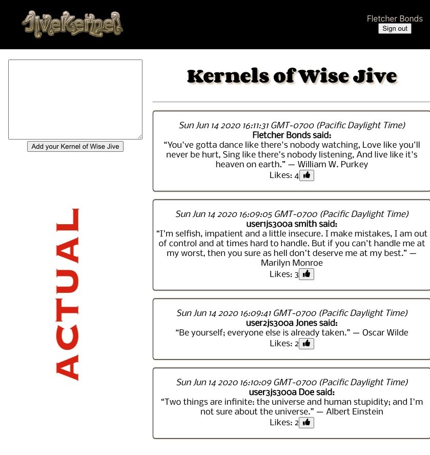
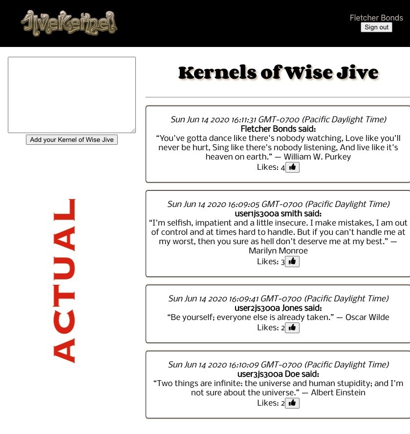

Elevator pitch: A product for people who think LiveJournal is just too overburdened with features and users: A new journaling app for users that want a minimalistic feature set that no one much uses but which did help Fletcher figure out a bit of javascript programming.
Wireframe: (see pictureS above) Hitting the site without login state will present a login popup. Once logged in, user will see a chronological list of entries of their own (and, if they have any, those of other users they've chose to friend) the entries ("kernels of jive") of all users sorted by "Likes" Stretch goals for this project (as also pictured in the wireframe) will be the ability to search for entries and to comment on other users posts Stretch goals were not achieved